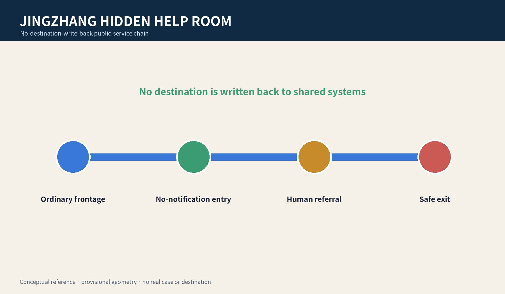
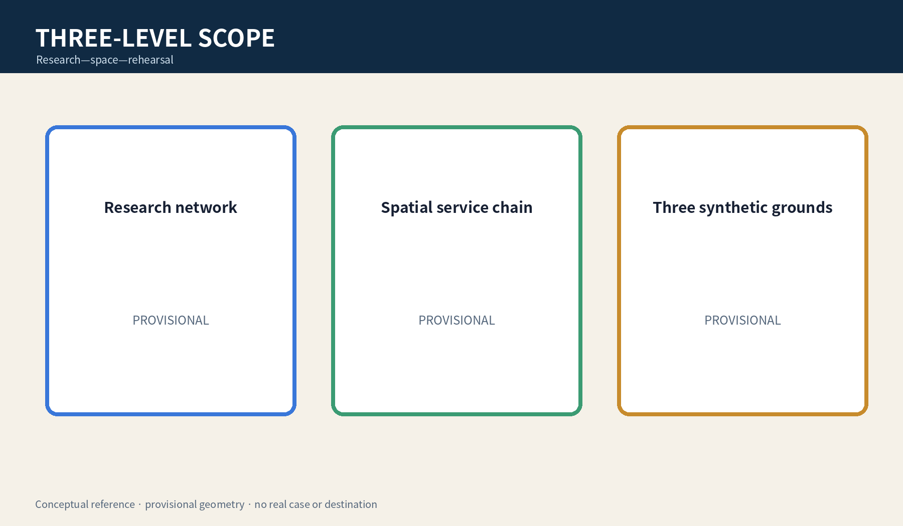
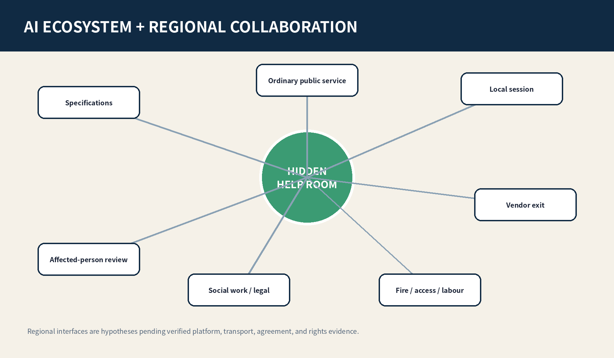
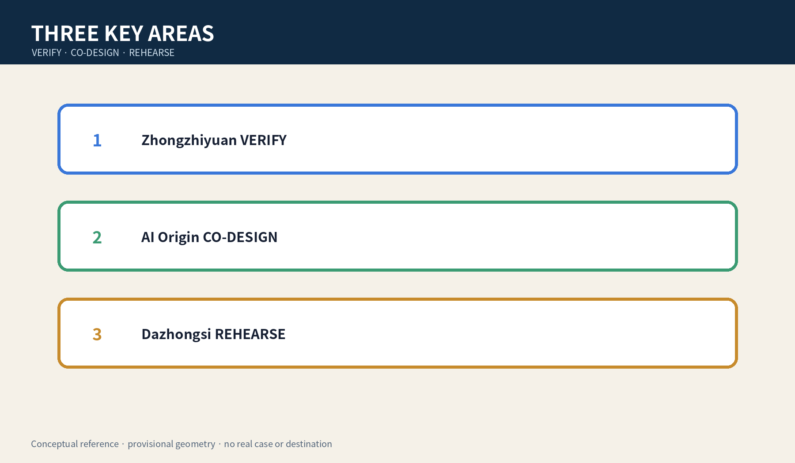
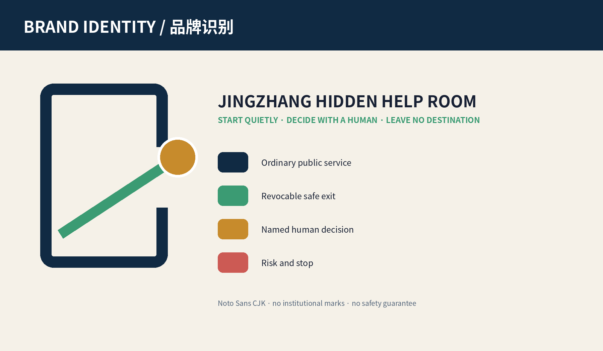
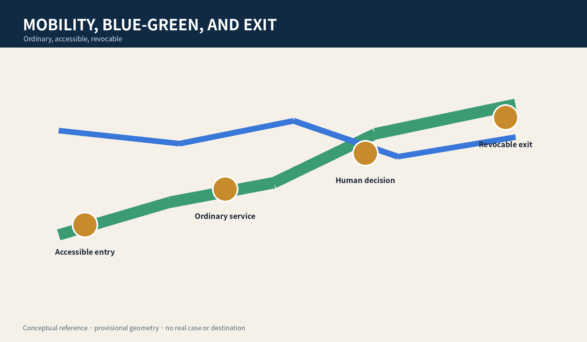
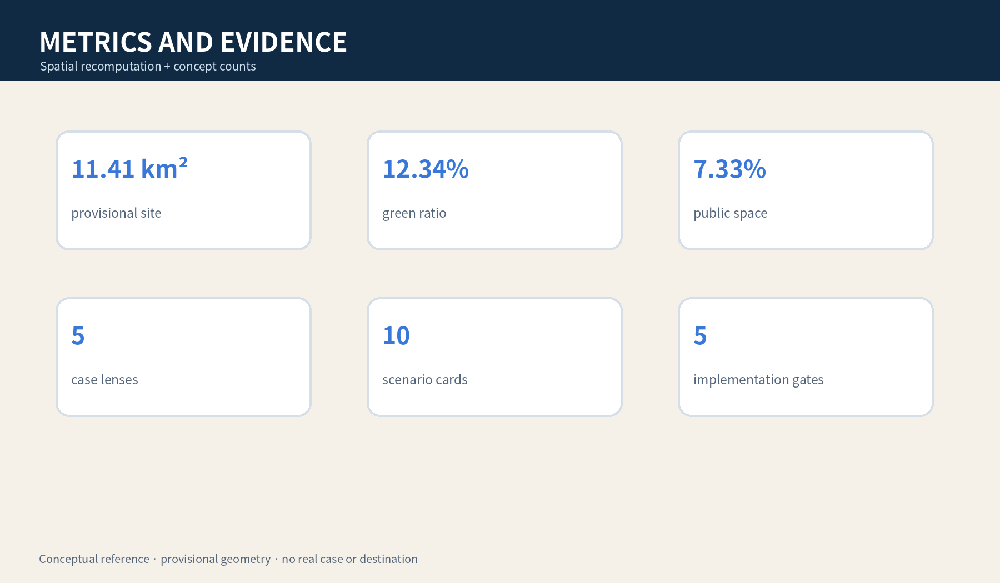

JINGZHANG HIDDEN HELP ROOM
When a shared device, account, or notification may be controlled by another person, ordinary frontage, multi-use private consultation, named human referral, and no destination write-back form a revocable public-service reference scheme.
JINGZHANG HIDDEN HELP ROOM
Start without an account, do not expose the entry through notifications, let a named professional decide any referral, and leave without writing the next destination to a shared system.
Boundary notice: All geometry is provisional rough, low-confidence, and non-official. This is a conceptual reference for professional teams and affected-person representatives to deepen; it identifies no real case, guarantees no safety outcome, and replaces no statutory emergency or record procedure.
Design Basis and Source List
The proposal uses the official announcement, agent taskbook, public source registry, local professional-standard snapshots, and provisional geometry. The announcement supports scopes and tasks; the taskbook supports agent.1–agent.6. None authorises a real location, security/fire conclusion, title decision, danger classification, or service deployment. Official polygons, real needs, confidential record handling, worker safety, and referral protocols remain pending professional confirmation. Source Source Depth
Its five-field difference is specific: the user may face control of device, account, or space; the task is discreet discovery—no-notification entry—human referral—no destination write-back—safe exit; the carrier is ordinary frontage plus a multi-use private room; decisions belong to the person and a confidentiality-bound social worker/legal-aid professional; failure stops AI and switches to paper and phone without creating a destination.

Three-Level Scope Framework
The coordinated layer studies public-service, professional, talent, and cultural networks; the overall layer studies ordinary frontage, private consultation, slow mobility, and exit; three key areas host synthetic rehearsal and conceptual validation only. They separately record sources, human decisions, failure results, and gaps. Recompute all geometry when official polygons arrive. Spatial data Metric Depth
The minimum spatial chain is multi-use ordinary frontage—non-identifying paper ticket—acoustic buffer—private consultation—human referral—safe exit. External signage says only “Private Consultation” and the rooms also serve general legal, health, and employment questions, so the queue does not expose the reason for arrival.

Coordinated Research Area: Industry and Future City Research
HIDDEN HELP ROOM is a cross-professional urban capability, not a “victim detection” product. Upstream are public options, account-free sessions, paper cards, acoustics, and accessibility. Midstream are social work, legal aid, privacy/records, fire/security, and labour-capacity review. Downstream are synthetic rehearsal, de-identified failure receipts, exit clauses, and affected-person evaluation. The Zhongguancun wing provides cleared specifications; the Xiaoyuehe wing tests ordinary arrival and accessibility only. Depth Source
Five case lenses compare data minimisation, address confidentiality, general-purpose private consultation, human referral, and vendor exit without importing foreign rules as local law. Three industry tests cover notification/history write-back, a shared-account proxy asking for records, and outage/staff absence.
The ecosystem map connects public-service operators, confidentiality-bound social-work/legal-aid roles, privacy and records specialists, fire/security, accessibility and labour safety, local-session tools, and affected-person representatives through a specification—space—rehearsal—review—exit chain. Regional links remain hypotheses pending evidence: Beiwei Community could test ordinary community frontage; Future Science City and Huairou Science City could contribute safety and human-factors methods; E-Town could test devices and vendor exit; Jing-Jin-Ji nodes could compare minimum records for cross-place referrals. No collaboration is claimed before platform, transport, agreement, and rights evidence exists. Metric Standard

Overall Design Area: Urban Renewal and Regulatory-Plan-Level Urban Design
The overall structure is one no-destination-write-back service chain, three synthetic rehearsal grounds, and two professional support wings. Near term is evidence inventory, a 1:1 no-real-service prototype, and affected-person co-design. A bounded non-case display is discussable only after fire, security, accessibility, privacy, confidential retention, staffing, and referral duties are clear. Any real service requires a separate project and fresh approval. Spatial data Depth Standard
Land-use, buildings, roads, green, and public-space layers express task adjacency only. If privacy, staffing, record isolation, or a safe contact cannot be confirmed, stop the AI session immediately.
Detailed Design of Key Areas
Zhongzhiyuan VERIFY uses synthetic shared-device cases to check notification, history, and cross-system write-back. AI Origin Community CO-DESIGN tests ordinary frontage, multi-use private consultation, accessibility, and discoverability. Dazhongsi REHEARSE tests rail arrival, translation, no-phone use, staff absence, and vendor exit. Acceptance is not recognition accuracy; it is whether the person can choose without exposing the entry, a named human controls records/referral, and failure switches to paper and safe exit. Spatial data Metric Depth

AI Innovation Ecosystem, Personas, and AI+ Scenarios
Agent.1 delivers naming, identity, three positions/five functions, and three areas/two wings. Agent.2 delivers five lenses, an ecosystem map, and three synthetic tests. Agent.3 delivers six personas, ten scenario cards, and scenario-space-operation mapping. Agent.4 delivers three landmarks and six components. Agent.5 delivers a culture of railway redundancy, ordinary frontage, and quiet exit. Agent.6 delivers quarterly rehearsal, half-yearly co-design, an annual forum, and a continuous exit ledger. Standard Metric Metric
Six personas are: shared-phone user, person without a personal device, minor, person needing translation/accessibility, accompanying caregiver, and frontline worker. They are design prompts, never inferred victim/perpetrator labels.
Ten cards are: 1 read public resources without an account; 2 shared-phone notification warning; 3 family proxy requests records; 4 no phone; 5 translation/easy read; 6 choose paper take-away/destruction; 7 professional creates lawful minimum record; 8 staff absent; 9 vendor outage; 10 safe exit after service. AI only presents reviewed public options, translates, checks shared-history write-back, and clears a local session after human confirmation.
agent.1 | Brand, overall concept, and coordination loop
The Chinese name and JINGZHANG HIDDEN HELP ROOM describe a no-digital-destination task without labelling a risk group. The logo uses two navy ordinary door frames, one green exit line, and an open gold node: ordinary public service, revocable exit, and a gap that AI cannot close. Colours are navy #102A43, service green #3B9B73, human-decision gold #C78B2C, and risk coral #CC5A54; open Noto Sans CJK is used, with no institutional mark, portrait, or safety-guarantee slogan. Three positions translate railway redundancy into public-service fallback, metropolitan AI experience into account-free use, and fusion innovation into cross-professional exit capability. Five functions close the loop through specifications, professional network, synthetic scenarios, ordinary service, and public failure receipts. VERIFY, CO-DESIGN, and REHEARSE sit in the three areas; the two wings provide cleared specifications and ordinary-arrival experience. Standard Depth

agent.2 | Five case lenses, enabling factors, and three industry tests
The five lenses are not company rankings: C1 data minimisation checks fields and retention; C2 address confidentiality checks cross-system destination exposure; C3 general private consultation checks signage, queues, and acoustics; C4 human referral checks role, minimum record, and stop; C5 vendor exit checks local clearing, open matters, and ordinary-service restoration. Land means ordinary revocable rooms; funding remains a prototype cost band pending quotations; talent includes social work, legal, privacy, accessibility, fire/security, and frontline staff; compute is local temporary session only; data is synthetic; scenarios are the three tests. T1 tests notification/map/calendar write-back on a shared phone, T2 tests a proxy requesting records, and T3 tests outage, no staff, and vendor exit. Real cases, destination leakage, or no cover shift trigger STOP. Metric Source
agent.3 | Six personas, ten scenarios, and operating thresholds
Each card includes user, space, human decision, prohibited AI role, and failure result. Frontage and consultation follow the same accessibility baseline; shared-phone cards default to hidden notification previews; proxy requests require a confidentiality-bound role to check applicable procedure; translation cannot auto-send; staff absence shows only “service paused” and public resources; paper, phone, and human consultation remain after vendor outage. Synthetic success requires zero destination write-back across all ten cards, a named human decision for each record, and ordinary service after stop. It does not predict real-world safety. Metric Metric
agent.4 | Public space, three landmarks, and component library
Quiet Gate uses an open green line to explain no write-back; Human Decision Table displays roles, confidentiality, and stop rights; Clear Receipt Light shows only that a local session is cleared, never identity, count, reason, or destination. Six components are multi-use signage, non-identifying ticket, acoustic buffer, write-back check card, human-referral card, and exit-clear checklist. All are movable, offline, and free of real maps/cases; nothing is placed while heritage, green, transport, or accessibility conditions remain unknown. Metric Spatial data
agent.5 | Cultural narrative, wayfinding, and international copy
The narrative does not aestheticise harm. Railway dual lines, redundancy, and staffed operation become “ordinary service remains after system exit”; Zhongguancun open collaboration becomes public specifications, synthetic failures, and revocable versions; AI culture states that public choices can be explained without learning a person’s identity. Wayfinding has city-level “Private Consultation”, four indoor pictograms, and a work-layer role/stop display. Fixed international copy is Start quietly. Decide with a human. Leave no destination behind. It must not imply law avoidance, a secret shelter, or an official safety guarantee. Source Depth
agent.6 | Annual programme, developer community, and durable exit
Q1/Q3 synthetic stress tests cover notification, proxy, outage, and clearing. Q2/Q4 affected-person representatives and frontline staff review discoverability, misleading cues, and workload. An annual forum publishes only cleared specifications, synthetic failures, and exits. The developer community accepts only localised, offline write-back and accessibility components. Opening uses G0 evidence/rights, G1 space/fire, G2 privacy/law, G3 staffing/referral, and G4 exit/review; any HOLD stops progression. The conversion path is public problem—synthetic prototype—independent review—bounded display—decision on a separate real project, with no attraction, funding, or procurement promise. Metric Depth
Land Use, Building Scale, and Retain-Renovate-Demolish Strategy
Four gapless zones express adjacency among ordinary service, Jing-Zhang park, private consultation/professional service, and community support. Footprints are movable no-real-case prototype envelopes, not existing or construction quantities. FAR, height, density, setbacks, structure, fire compartmentation, and title await official conditions. Retain/renovate/demolish means verify conditions and rights first, prefer ordinary rooms and movable components, and do not alter/build/test when conditions are unknown. Metric Spatial data Depth
The design intent is to let the task use general service space rather than create a recognisable special facility. The gapless land-use zones and conceptual building envelopes check whether the spatial chain fits inside the submission boundary; their areas prove package topology only, not that a room exists, can be acquired, or meets acoustic performance. Professional development must add room dimensions, acoustics, sightlines, access control, evacuation, fire, accessibility, title, and frontline-worker safety surveys, while affected-person representatives test whether multi-use presentation makes the entry undiscoverable. If any condition remains unresolved, retain ordinary human consultation and do not alter, build, or test with real cases.
Transport, Rail, Municipal Infrastructure, and Public Services
The road layer is a task relation, not a road redline. The ordinary path lets a person without phone or account reach a human interface; the AI line must remain removable and cannot block paper/phone fallback. Rail access, crossings, parking, fire access, evacuation, and night safety await professional review. Municipal strategy is limited to local temporary sessions, physical disconnect, paper cards, phone, and minimal logs; capacity requires rosters, peaks, cover shifts, and recovery reconciliation. Spatial data Depth Standard

Blue-Green Network, Public Space, and Urban Character
Blue-green slow mobility is not a “secret route”; it is an ordinary, accessible, revocable public path that displays no referral destination and publishes no small-sample attendance. Three conceptual landmarks are Quiet Gate (explains no write-back), Human Decision Table (shows roles and stop rights), and Clear Receipt Light (shows only that the session is cleared). An honour wall displays cleared specifications, synthetic tests, and version contributions; withdrawal can remove identity while retaining de-identified facts. Spatial data Spatial data Depth
The component library includes multi-use signage, non-identifying paper ticket, acoustic buffer, write-back check card, human-referral card, and exit-clear checklist, all subject to affected-person and professional review.
Renewal Projects, Implementation Policy, and Phasing
JZ-01 inventories public-service/confidentiality/emergency procedures. JZ-02 builds a no-real-case 1:1 prototype. JZ-03 tests shared-device and notification write-back. JZ-04 conducts affected-person, social-work, legal, privacy, fire/security, and labour review. JZ-05 discusses bounded display only after critical items close. JZ-06 can trigger exit at any stage. Exit disables the smart layer, disposes logs under an applicable basis, hands over open matters, and preserves ordinary human consultation. Spatial data Depth Metric
Operations are a quarterly synthetic stress test, half-yearly affected-person co-design, annual revocable public-service forum, and continuous rights/version ledger. They are concepts, not government event, procurement, investment, or attraction commitments.
Metrics, Area Recalculation, and Compliance Matrix
Metrics have three classes: spatial consistency recomputed from GeoJSON in EPSG:4548; conceptual counts of five lenses, three tests, ten scenarios, six personas, three landmarks, and five gates; and a synthetic “zero destination write-back to shared systems” target. Known values do not extrapolate real demand, capacity, legality, or safety. Agent.1–agent.6 each map to dedicated chapters, figures, spatial objects, metrics, sources, and outputs; exhaustive audit stays in structured files. Metric Depth Metric

Risk, Copyright, and Compliance
Main risks are provisional geometry mistaken for redlines; multi-use signage making the entry undiscoverable; AI inferring danger or alerting on its own; notification/map/shared-calendar exposure; lawful retention being misread as avoidable; staff becoming unlimited fallback; and vendor exit leaving records. Controls are package-wide provisional notices, prohibited AI roles, named human decisions, paper fallback, staffing limits, exit lists, and affected-person co-design. All text, figures, HTML/PDF, and structured design were generated by this agent; Noto CJK fonts are embedded under their licence. There are no real cases, addresses, destinations, or uncleared brands. Source Depth Standard
References
Full provenance, licences, and limits are in sources.json, standard_matrix.json, design_depth_matrix.json, and report/copyright_statement.md. The official announcement supports tasks and scopes; provisional geometry supports generation, visualisation, and discussion only. Source Source
Source grades directly constrain design claims: the official announcement and cleared taskbook can describe objectives and deliverables; local professional-standard snapshots define questions for later review; provisional boundaries only check layer topology and cannot support redlines, precise areas, title, or engineering conclusions. Concept counts come from manual enumeration of this package's scenarios, personas, landmarks, and gates, not observed city statistics. When official polygons, controls, utilities, heritage, fire/security, real-service needs, or applicable procedures change, record provenance, purpose, licence, date, and limits first, then regenerate GeoJSON, metrics, figures, HTML, and PDFs. Unverifiable material remains pending official data and cannot be promoted into fact.